通用发布
Author: Charley
在完成项目的开发与调试之后，最终的目标是将游戏或应用构建并发布到目标平台，让玩家或用户能够顺畅体验。LayaAir IDE 提供了一套完善的构建与发布流程，帮助开发者快速生成适配不同平台的运行版本。无论是 Web、PC 客户端，还是各类移动端与小游戏平台，IDE 都能根据平台特性最大程度地降低开发者的发布成本。
LayaAir 支持当前主流平台的发布能力，包括网页端、移动端（Android、iOS、HarmonyOS Next）、小游戏端（微信、抖音、华为、OPPO、vivo、支付宝、淘宝等），以及 PC 端（Windows、Linux）等。
本篇的“通用发布”部分涵盖了各平台发布的通用基础能力。开发者需要重点掌握这里的配置与功能，以避免最终的发布效果与预期不符。
1、发布入口与流程
1.1 构建发布的入口
开发者可以通过 IDE 顶部菜单栏中的 “文件” → “构建发布” 打开构建发布面板。该面板可以自由停靠在 IDE 的中间区域，方便进行构建配置，如图1-1所示：
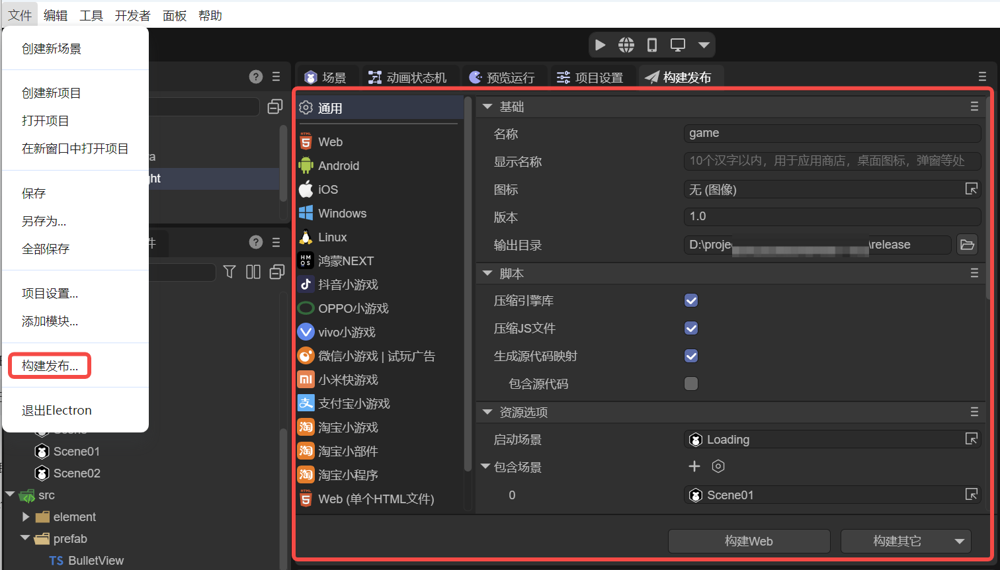
（图1-1）
在通用面板的底部，默认提供了 “构建 Web” 与 “构建其它” 两个快捷按钮。开发者既可以直接点击按钮进行快速构建，如图1-2所示。也可以在左侧平台列表中选择目标平台，进入对应的配置面板后再进行构建发布。
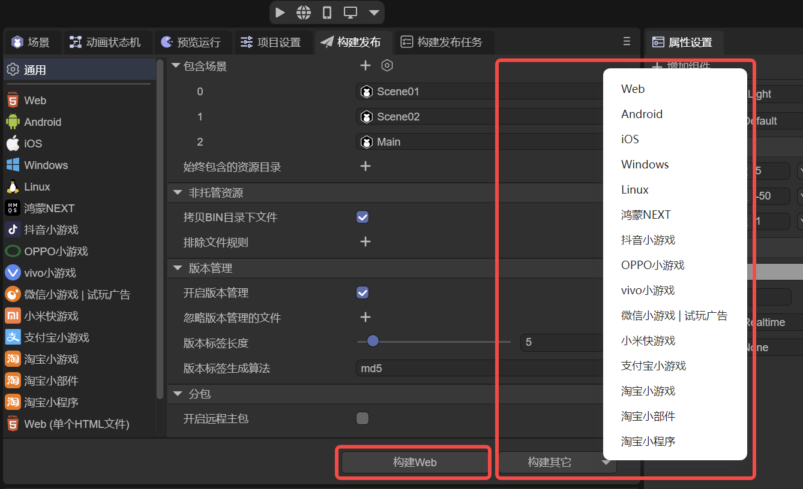
(图1-2)
Web 是指发布为《HTML5版本》，运行于各平台的浏览器HTML5环境、内嵌APP或小程序的webView环境中。
Android 是指发布为《安卓平台》，运行于安卓的APP环境中。
iOS 是指发布为《iOS平台》，运行于iOS的APP环境中。
Windows是指发布到《Windows平台》，直接运行于windows系统桌面。
Liunx是指发布到 《Liunx平台》，直接运行于Liunx系统桌面。
鸿蒙NEXT是指发布为已适配《鸿蒙NEXT》的项目工程。
抖音小游戏 是指发布为已适配《抖音小游戏》的项目工程。
OPPO小游戏是指发布为已适配《OPPO小游戏》的项目工程。
VIVO小游戏是指发布为已适配《VIVO小游戏》的项目工程。
微信小游戏 | 试玩广告 是指发布为已适配《微信小游戏 或 试玩广告》的项目工程。
小米快游戏是指发布为已适配《小米快游戏》的项目工程。
支付宝小游戏是指发布为已适配《支付宝小游戏》的项目工程。
淘宝小游戏是指发布为已适配《淘宝小游戏》的项目工程。
本篇主要介绍通用的发布设置，各发布平台可以点击以上链接查看文档。
1.2 发布任务与操作
点击构建按钮后，IDE 会自动切换到 “构建发布任务” 面板。在发布过程完成后，开发者可以通过选中对应的历史记录来执行一系列操作，例如：打开发布目录、查看构建日志、重新构建、直接运行、扫码运行或删除构建目录。如图1-3所示。
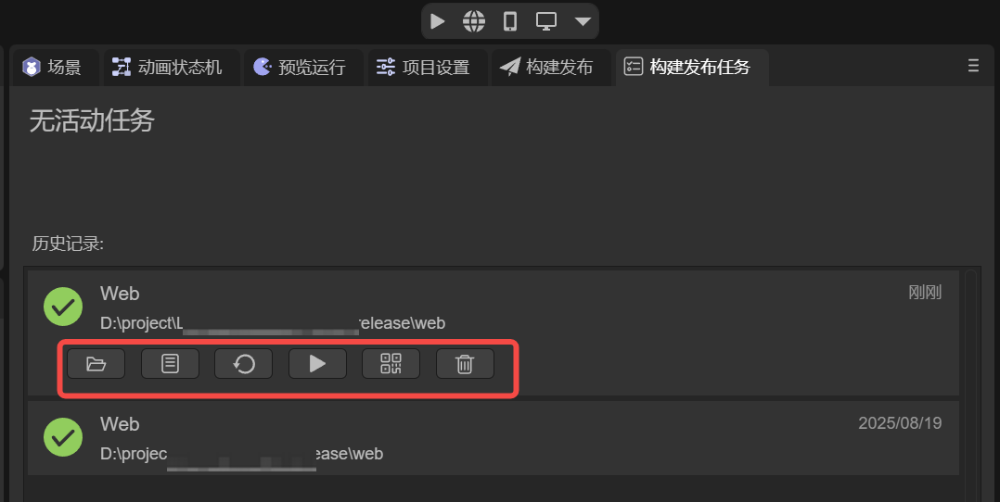
(图1-3)
2、 基础
基础设置部分涵盖了所有平台在发布过程中都会用到的公共信息。开发者需要在这里进行必要的配置，以确保项目在不同平台上都能正确识别和展示。
2.1 名称 name
项目的内部名称，在创建项目的时候填写，此处可修改（通常不修改，与工程文件名称保持一致）。 如果没有设置显示名称，默认作为显示名称来使用。
例如， Web 发布 后，名称会显示在生成的 HTML 文件中，作为网页的 <title>。
作为 Native 包，名称将作为包名，以及窗体上的默认名称。如图2-1所示。
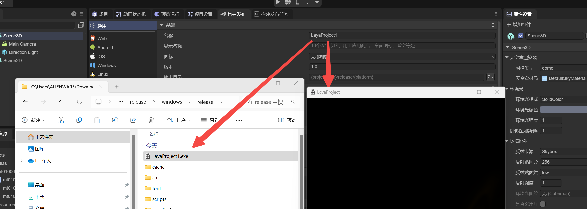
（图2-1）
2.2 显示名称 displayName
用户可见的产品名称。用于网页浏览器标题、桌面应用名称、安装包名称等。
设置后，系统会优先显示该名称，而不是项目的名称。 如图2-2所示。
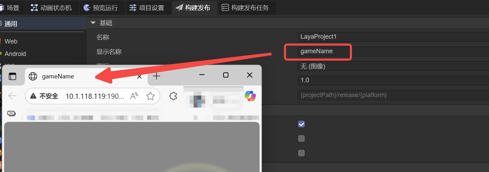
(图2-2)
2.3 图标 icon
作为应用在桌面、安装界面等处的默认图标。 通常需要是一个正方形的图标。
2.4 版本 version
项目的版本号，用于标识不同的功能版本。
- 当进行较大功能更新时，可以将版本号从
1.0升级到2.0。 - 如果只是进行小范围的 Bug 修复或优化，则可在原版本号基础上递增，如
1.0→1.1。 推荐采用 浮点数格式（如0.1、1.3、5.0），便于管理和区分。
2.5 输出目录 outputPath
发布后生成的文件存放目录。
- 默认路径为项目根目录下的
release文件夹。 - 建议保持默认路径，以便统一管理。
- 如有特殊需求，开发者也可以自定义路径，既可以是项目目录下的子文件夹，也可以是完全独立的目录。
3、脚本
3.1 压缩引擎库 useCompressedEngine
正式发布时，建议勾选，启用后将使用压缩版引擎类库，减少包体大小。
3.2 压缩JS文件 minifyJS
正式发布时，建议勾选，启用后将输出压缩后的 JS 文件，进一步减小体积。
3.3 生成源代码映射 sourcemap
启用后会在输出目录生成 .js.map 文件，用于调试时的源码映射。
Source Map（源代码映射）是一种用于调试和开发的技术，它建立了原始源代码与压缩、混淆后的代码之间的映射关系。通过创建一个源代码映射文件，可以在浏览器开发者工具中准确地将压缩后的代码映射回原始的源代码，从而方便开发者在调试过程中定位问题、查看错误堆栈和变量值，提高调试效率。
3.4 包含源代码 sourcesContent
包含源代码是源代码映射的关联属性，
勾选后，源代码映射的.map 文件中会直接带上源码内容，调试时可以在浏览器里直接看到完整源码，调试体验最好，但会增加发布包大小，并且源码容易被还原查看。
如果不勾选，.map 文件只保存源码的映射关系，不带源码文本，只能看到压缩后的 JS。但出错时，能提供正确的错误行列定位，属于“调试信息最小化”的方案，常用于线上环境。
4、资源选项
4.1 启动场景 startupScene
启动场景是引擎加载与初始化之后的项目入口场景，必需要设置。
4.2 包含场景 includedScenes
对于场景，只有启动场景和被包含的场景文件才会被复制到发布目录。
发布流程，会将场景引用的资源一起打包到发布目录。
4.3 始终包含的资源目录 alwaysIncluded
IDE项目assets中的资源有很多，哪些资源会复制到发布目录，主要由三种规则决定。
第一，发布场景（启动场景+包含场景）中所引用的资源会被复制到发布目录。
第二，assets目录下，所有采用resources命名的目录下的所有资源，都会被自动合并复制到发布目录下的resources目录内。如图4-1所示。
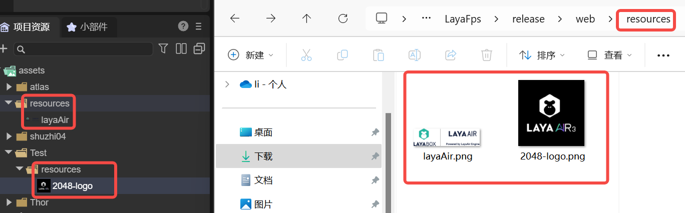
(图4-1)
第三，除以上两种规则外，在始终包含的资源目录配置中的目录，也会被复制到发布目录中。如图4-2所示。
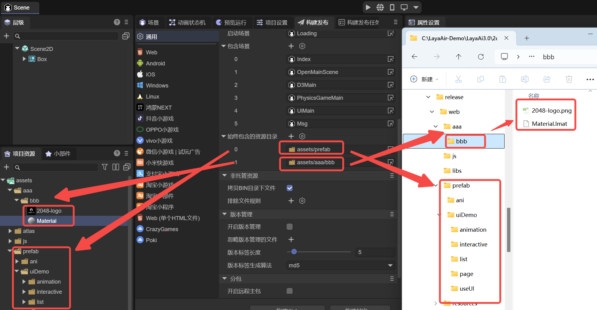
（图4-2）
5、非托管资源
5.1 拷贝BIN目录下文件 copyBinFiles
勾选后，项目工程中 bin 目录 下的文件会被一并复制到发布目录。
该功能主要适用于以下场景：
- 自定义修改了
bin/index.html（不建议直接修改该文件）； - 在 bin 目录 下存放了一些不便放在
assets目录的特殊资源，例如需要通过 DOM 方式 直接加载的资源。
5.2 排除文件规则 excludeFilesRule
排除文件规则 是 拷贝 BIN 目录下文件 的配套选项。
当勾选了 拷贝 BIN 目录下文件 后，可以在此规则中配置需要排除的文件或目录。例如：
排除某个指定目录（含子目录）的所有文件，例如
abc/**/*排除具体文件，例如
bg2.png如图5-1所示。
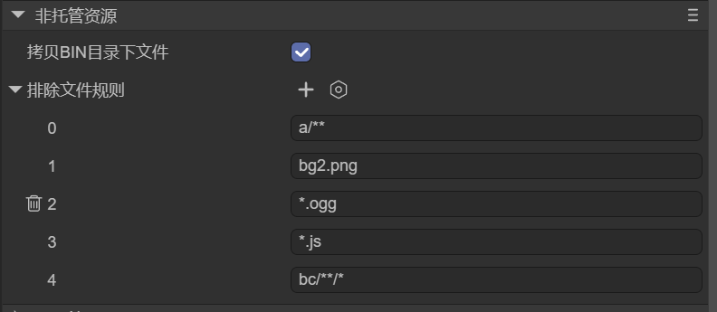
（图5-1）
6、版本管理
6.1 开启版本管理 enableVersion
启用版本管理后，除引擎自带的入口文件外，其余未被忽略的文件名称都会附加一个由指定算法和长度生成的版本标签，如图6-1所示。
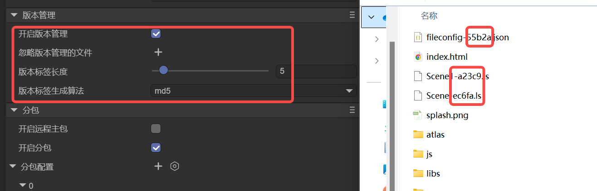
(图6-1)
这种方式可以有效避免因 CDN 或浏览器缓存导致的文件更新不及时，从而引发的显示异常问题。
6.2 忽略版本管理的文件 ignoreFilesInVersion
开启版本管理后，除引擎自带的入口文件外，默认是所有文件都会携带版本标签。
忽略版本管理的文件的功能，允许开发者可以指定部分文件不携带版本标签。
6.3 版本标签生成算法 versionAlgorithm
版本标签的默认算法为 MD5，也可以选择 SHA1 或 SHA256。
开发者可根据项目需求选择合适的算法。
6.4 版本标签长度 versionTagLength
版本标签的默认长度为 5 位。
开发者可自由调整，但需注意合理性，例如 MD5 算法的长度最大为 32 位。
7、分包
7.1 开启远程主包 enableRemoteMainPackage
在实际项目中，通常会将 游戏资源 与 脚本代码、引擎库 、入口文件分开存放。
例如：将资源托管在腾讯云 COS（对象存储）等远程服务器上，而脚本与引擎库则保留在小游戏本地包体中。
启用 开启远程主包 后，需要设置资源服务器地址 mainPackageRemoteUrl，作为资源加载的路径前缀，如图7-1所示。
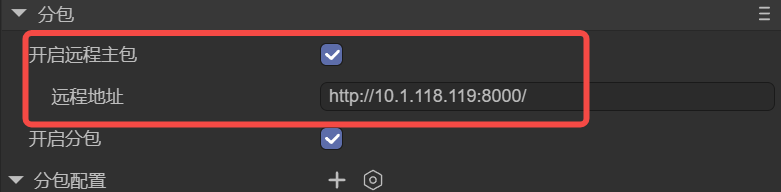
(图7-1)配置完成后，发布流程会将所有资源单独输出到一个名为 目标平台-remote 的目录中。
该目录中的内容需要上传到远程服务器，而原始的发布目录不再包含项目资源，仅包含入口文件、引擎库（libs）和项目脚本（js），如图7-2所示。
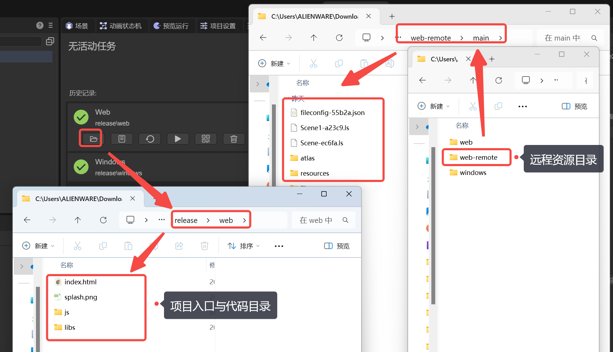
(图7-2)
在开发或测试阶段，如果暂时没有远程服务器，可以直接在 远程资源目录 下启动一个本地 Web 服务（如使用 anywhere），并将该服务的访问地址配置为资源服务器 URL，如图7-3所示。
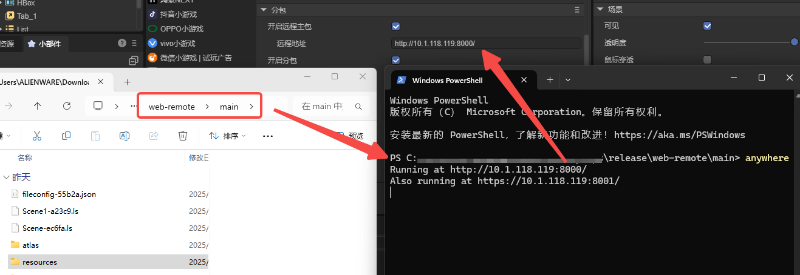
(图7-3)
发布完成后，可以通过调试工具验证资源加载情况。此时，资源的请求路径将指向配置的远程地址，而非项目的启动 URL，如图7-4所示。
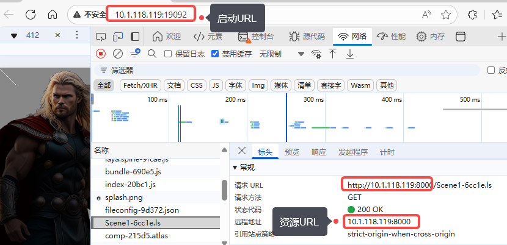
(图7-4)
7.2 开启分包 enableSubpackages
为了避免首包过大，用户等待时间长而导致用户流失。以及平台的限制（例如小游戏包体限制）、代码和资源模块化开发等需求。将项目分成入口主包，以及若干模块的分包，构成一个完整的项目。
开启分包后，可以配置一个或多个分包，以及WASM分包，如图7-5所示。
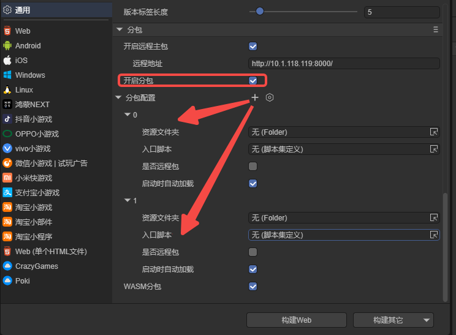
(图7-5)
7.3 分包配置 subpackages
7.3.1 资源文件夹 path
资源文件夹 指定了每个分包的根目录路径。
通常我们会将目录命名为 sub1、sub2 等，再通过选择或拖拽的方式，将该目录绑定到 资源文件夹 配置项中，如图7-6所示。
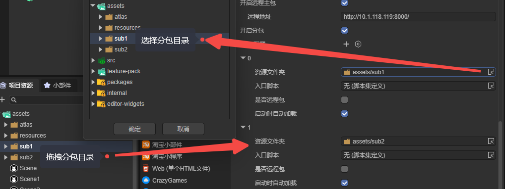
(图7-6)
需要注意：如果分包目录中的资源不在“包含场景”里，而是依赖代码动态加载，则必须将分包目录额外添加到 始终包含的资源目录 中如图7-7所示，否则发布时可能被忽略。
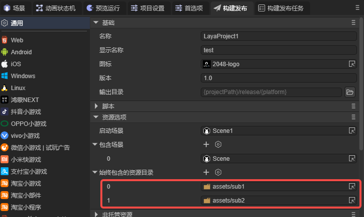
（图7-7）
7.3.2 入口脚本 mainScript
如果分包的目的仅是资源分包，那入口脚本处可不设置，默认为无，即可。
入口脚本的主要作用是代码分包。可接收 脚本集定义文件，如图7-8所示：
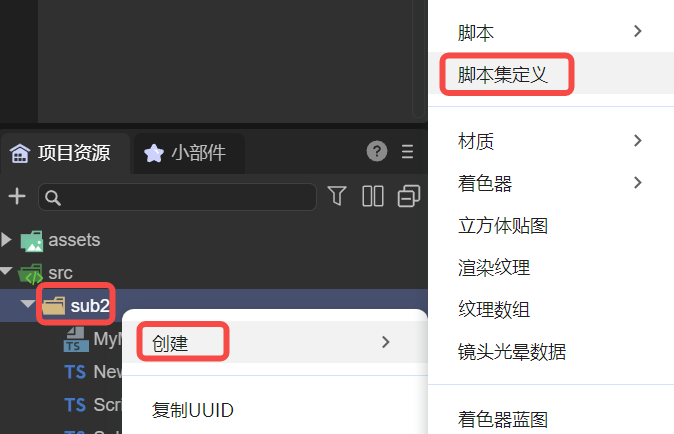
（图7-8）
通过脚本集定义，可以将分包中的代码编译打包为一个完整的分包脚本集game.js。
如果不了解脚本集定义，可查看相关文档《脚本集定义》
7.3.3 启动时自动加载 autoLoad
勾选后，分包会在首场景加载之前自动加载。
如果希望通过代码逻辑控制分包的加载时机，可取消勾选并在代码中手动加载。
手动加载的方式如下：
//非远程包的加载方式
Laya.loader.loadPackage("NewFolder"); // "NewFolder" 为分包目录名称
//远程包的加载方式，提供了资源网络地址才会认为是在加载远程包
Laya.loader.loadPackage("NewFolder", "http://cdn.cn/"); //"http://cdn.cn/"是网络地址
loadPackage 方法不会立刻加载所有资源，它只是加载一个包的描述文件。
分包加载完成后，分包中的资源使用方式与普通资源完全相同。
例如资源路径为 "NewFolder/a.png"，无论该资源来自本地分包还是远程分包，都可通过相同的路径进行加载。
7.3.4 是否远程包 remote
在7.1小节中，我们已经介绍过“远程主包”的概念。实际上，无论是主包还是分包，远程包的原理与作用是一致的。
当勾选该项后，表示当前分包将作为远程包发布。构建发布时，该分包的资源与脚本（若配置了）会一并输出到远程包目录中（release\平台名-remote）。
💡 分包功能适用于所有平台，但需注意：
非远程包用于小游戏平台的分包，对于web平台，使用非远程的分包意义不大，建议勾选，使用远程包。
7.3.5 远程地址remoteUrl
当同时勾选 启动时自动加载 和 是否远程包，会显示 远程地址remoteUrl 这个参数，如动图7-9所示。
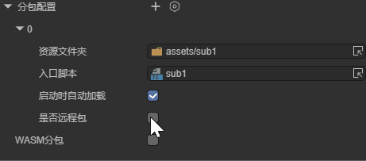
（动图7-9）
只有在填写有效的远程地址后，远程包配置才会真正生效。
其加载方式与效果与 7.1 小节 中介绍的远程主包相同，这里不再赘述。
7.4 WASM分包 enableWasmSubpackage
勾选开启分包和WASM分包后，发布时会筛选所有以".wasm"结尾的文件（且文件属性勾选 导入为插件），当存在符合条件的WASM文件时，构建发布系统会自动创建一个分包配置对象 wasmSubpackage ，设置为启动时自动加载。并在资源输出目录中自动创建一个"wasm_files"文件夹，将符合条件的".wasm"结尾的文件都复制到这个文件夹中，如图7-10所示。
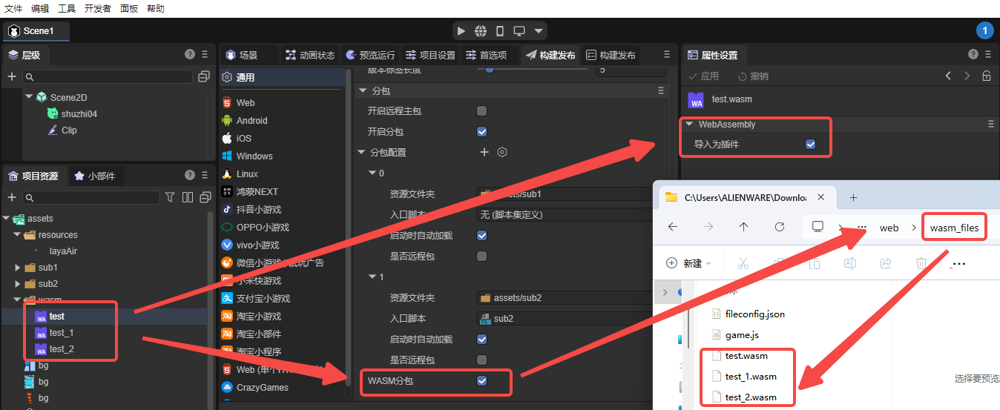
（图7-10）
💡 需要重点强调的是，.wasm的文件，在IDE里必须设置勾选 导入为插件，才会复制到分包目录（wasm_files）中。